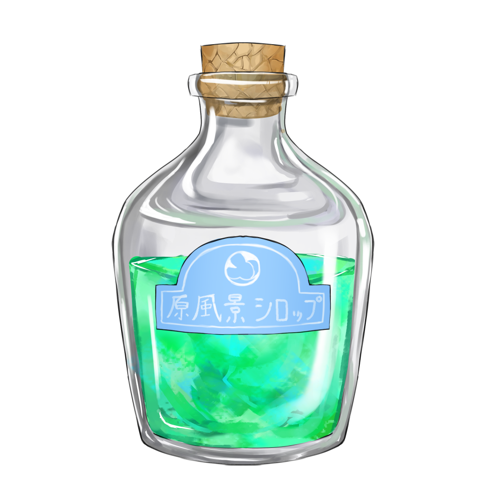

原風景シロップ

【効果・効能】
畑の緑と青空の風景を主成分とし、忙しい日々で忘れかけた「夏らしさ」を
穏やかに補給するシロップです。
蒸し暑さや汗さえも夏の一部として受け入れられるようになります。
自然の風や木陰の心地よさを思い出したい人や
日常から少し離れて深呼吸したい人に向けた、
懐かしさと開放感を与える調合です。
【成分】
・青く澄んだ夏空
・風に揺れる畑
・真夏の日差し
・土の香り
・鴉の鳴き声
【服用時点】
深呼吸がしたくなったとき
【副作用】
突然駆け出したくなります
【生産地】
カナガワ
【製造会社名】
春巻製薬株式会社

製造者からひとこと
夏のジメジメとした暑さの中、汗が流れてくるほどの気温だったにもかかわらず、
不思議とその場を離れたくないと思いました。
風が吹くたびに畑の緑が揺れ、遠くからは鴉の声が聞こえてきます。
木々がつくる影の下に立って景色を眺めていると、
子どもの頃の夏休みの記憶がふとよみがえりました。
ただの地元の景色ですが、そこには確かに夏の魅力があります。
暑さも風も匂いも含めて、大人になった今だからこそ味わいたい、私にとっての
夏の原風景です。